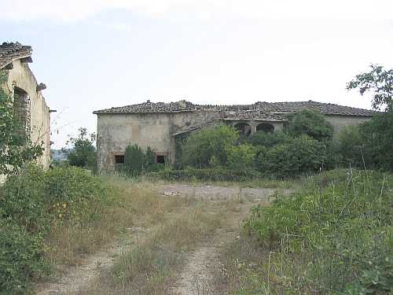

Si trova questo podere immerso nei campi e nei boschi di Passeggeri, al quale si arriva imboccando la strada detta di Passeggeri a Maciallina. Giunti all’altezza di Castagnoli la strada si dirama sulla destra e procedendo ancora per poco meno di un chilometro ci si ritrova di fronte Poggiobenichi, sui margini di un pianoro che inizia a degradare. Un’altra via per Poggiobenichi, un tempo la più frequentata, è quella di Monastero che si prende dopo aver superato Castagnoli di circa mezzo chilometro, in direzione Passeggeri.

La larga costruzione su due piani è composta da un nucleo centrale al quale è stato aggiunto un grande ambiente nella parte del polloneto, che guarda a nord, fornito di Loggia e realizzato verso il 1925, per il cui tetto il Sarrocchi fece costruire dei tabelloni appositi, nella sua fornace. Una corte interna con forno dà l’accesso alle stalle e all’abitazione. Un altro ingresso a Nord, con corta scala, dà l’accesso alla loggia e alla casa. Altro edificio staccato, sulla sinistra guardando la loggia, è destinato ai castri e alla capanna. Come tutti i poderi del Sarrocchi è stato oggetto di migliorie nei servizi e l’abitazione aveva 11/12 stanze. Nel 1825 al Catasto è registrato come casa colonica e chiostro di 1386 bq. (471 mq.) e capanna e aia di 722 bq. Antico podere nei confini della parrocchia di S. Stefano alla Ripa passa successivamente a Basciano e quindi a Quercegrossa nel 1884. Le prime notizie risalgono al 1319 e citano Poggiobenichi con terra lavorativa, vigna, casa e capanna. L’origine del nome Poggio Benichi è assolutamente improponibile, ma certamente è da attribuire al nome qualche proprietario dei secoli precedenti. In epoca più recente risulta possesso dei Cosci, e da questi a metà Seicento passa alla famiglia Piccolomini tra i quali troviamo Flavio Bandini Naldi Piccolomini nel Settecento. Nel 1825 la proprietà di Poggiobenichi è ancora in mano ai suoi quattro figli: Francesco, Niccolò, Alessandro e Marco-Antonio. Nel 1862 passa al solo Marco Antonio e nel 1867 alla di lui figlia Caterina Bandini Piccolomini. I seguenti trent’anni vedono la proprietà cambiare di mano più volte nell’ambito della famiglia Piccolomini fino al 1892, quando il 25 luglio si registra il passaggio di proprietà a tre donne, due delle quali vedove Bandini Piccolomini con Fracassi Stella per 4/6 e Matilde Mercuri per 1/6 mentre il rimanente 1/6 va a Rosa figlia del fu Niccolò Bandini Piccolomini. Questo sarà l’ultimo passaggio nell’ambito dell’antica famiglia perché il 18 marzo 1905 per compra, il podere passa a Sarrocchi ing. Guido e avv. Gino fu cavalier Tito. Nel maggio successivo per divisione dei beni diviene padrone l’ing. Guido, ma due anni dopo il 5 dicembre 1907 vende al fratello Gino e da allora segue i passaggi della fattoria di Passeggeri.
Il podere aveva un’estensione di venticinque ettari compreso il bosco
"ed era uno dei più grandi della Fattoria". La produzione maggiore riguardava il vino che raggiungeva i 150 ql. mentre col grano si arrivava a 70/80 ql. Al tempo dei Rodani la stalla accoglieva un paio di bovi, uno di vacche e due/tre vitelli. Poi pollame e maiali. Ammazzavano un maiale l’anno e uno lo vendevano. I precedenti mezzaioli, i Cancelli, avevano una ventina di pecore e tenevano tre scrofe. L’acqua dal pozzo di condotta dai tetti e il bucato alle fonti di Castagnoli. Possedevano una ciuca che serviva per fare il segato. Non essendoci la luce elettrica si illuminava con un lume a gas in cucina e basta; prima c’era l’acetilene a carburo.
Fin dai primi documenti relativi a Poggiobenichi troviamo che questo podere è sempre stato abitato da una sola famiglia di coloni con l’eccezione di venti anni a metà Settecento quando Francesco Fusi e dopo di lui Cosimo Bruchi sono definiti pigionali. Le famiglie che vi hanno vissuto comprendevano dai cinque ai tredici componenti con il massimo dell’Andreini nel 1898 con sedici persone in famiglia. Si ricordano tra le tante i Bizzelli con Vestro di Battista nel 1592, i Sestigiani ai primi del Seicento, Michele Carrisi nel 1615, poi Viligiardi, Raffaello Bonci nel 1672, Fusi, Maestrini, Padovani, Palazzi, Minucci, Fiaschi, Vannini, Lucchesi, Bogi, Bandini, l’Andreini che inizia il Novecento al quale seguono i Bravi, i Simoncini, i Cancelli, i Valiani e i Rodani ultimi della lista. Tutte le famiglie elencate hanno stanziato per pochi anni a Poggiobenichi e raramente hanno superato il decennio.
La strada che arriva a Poggiobenichi, preda da tempo della vegetazione.
La parte che guarda a ponente con l'ingresso ai servizi agricoli
Altri ambienti agricoli diroccati come l'edificio principale
L'ampio ambiente del forno
Quel che resta dell'ingresso al podere
Le moderne stalle realizzate dal Sarrocchi
Capitolo successivo Poggioni
Inizio pagina
Vai all'Indice dei Capitoli